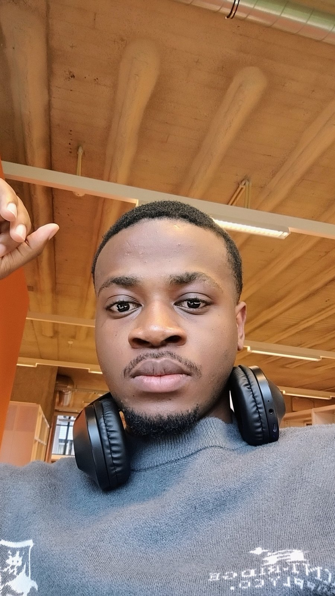
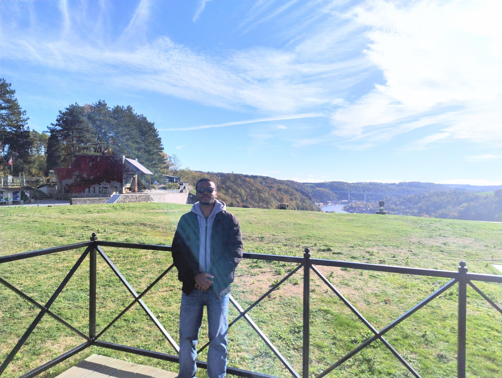
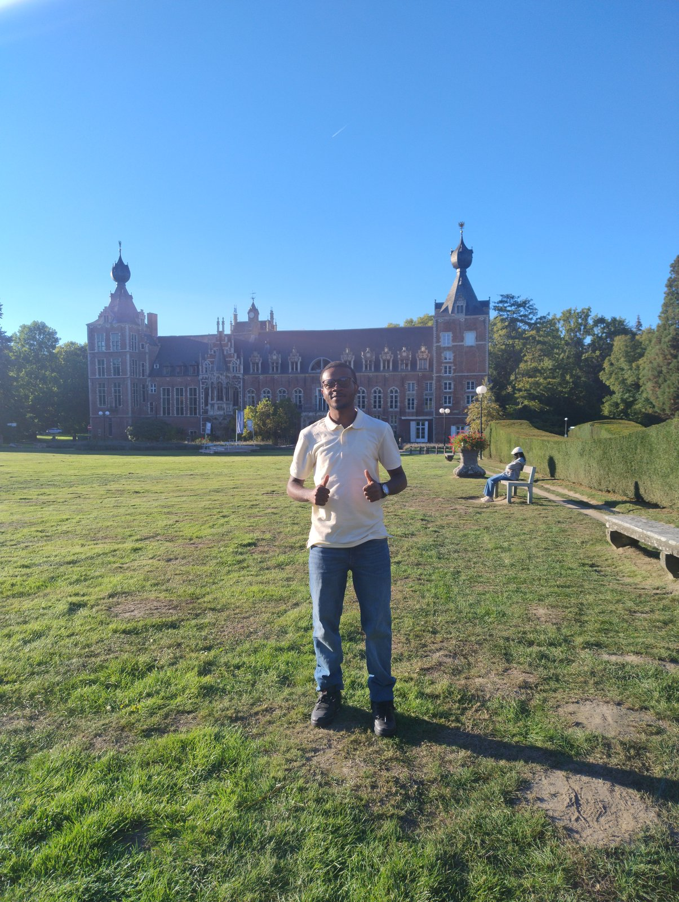
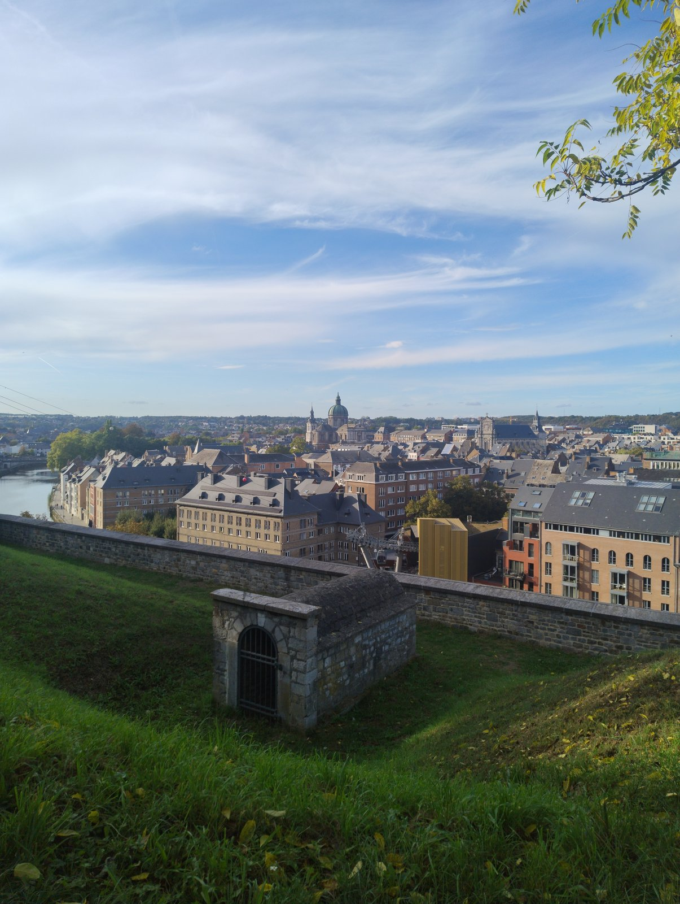
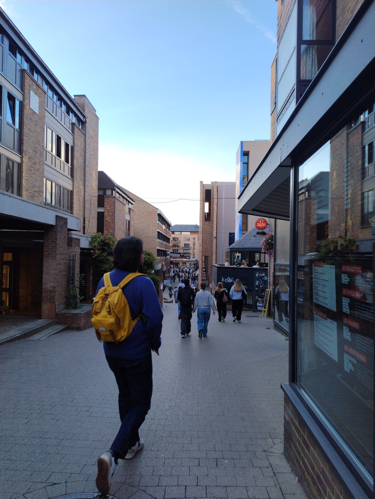

Étudiant à l'École polytechnique de Louvain et fondateur du Club des Divergents. Auteur de manuels scientifiques conçus pour forger la rigueur analytique des futurs ingénieurs et chercheurs.
« L’algèbre n’est qu’une géométrie écrite ; la géométrie n’est qu’une algèbre figurée. »

Né à Goma (RDC) le 26 décembre 2006, Germain-Junior TWAMBA SENGI a fondé en 2020 le Club des Divergents. Son postulat est simple : la réussite dans les études supérieures d'ingénierie et de sciences ne dépend pas d'un don providentiel, mais de la clarté des concepts, de la méthode et d'une endurance infatigable face aux problèmes ardus.
Après sa formation à l'Institut Mwanga de Goma puis son passage par la Faculté Polytechnique de l'UNIKIN, il poursuit ses études d'ingénieur civil à l'École polytechnique de Louvain (UCLouvain) en Belgique.
Ses ouvrages incarnent ce pont entre l'enseignement secondaire d'excellence et l'abstraction universitaire, en fournissant aux élèves congolais et africains des outils rigoureux rédigés selon les plus hauts standards académiques.
Entre les amphithéâtres de Louvain-la-Neuve, les falaises de Dinant et les souvenirs du Kivu, les mathématiques accompagnent chaque pas.




Des manuels conçus sans concession sur la rigueur, composés en LaTeX avec figures vectorielles TikZ et Asymptote.
Deuxième volet de la collection, ce volume marque le passage décisif du calcul technique vers l'abstraction universitaire. Il articule les nombres complexes, l'analyse approfondie des fonctions réelles (limites, continuité, calcul différentiel, exponentielles et logarithmes) et la géométrie synthétique et analytique.
Un panorama complet et rigoureux de la trigonométrie plane et de ses applications, pensé sur mesure pour le contexte scolaire congolais et la transition polytechnique.
Solutions rigoureuses et exhaustives des épreuves d'Algèbre, d'Analyse et de Géométrie de la Prépolytechnique de l'Université de Kinshasa (UNIKIN), session 2024.
Compilation commentée des matchs de génies en herbe disputés à l'Institut Mwanga de Goma durant l'année scolaire 2023–2024. Culture générale et sciences.
Fondé à Goma en 2020, le Club des Divergents est un cercle d'émulation intellectuelle et de rigueur mathématique. Né de la volonté de briser les barrières d'accès aux mathématiques universitaires, il promeut une culture du problème difficile résolu dans l'effort collectif.
En hommage à l'artefact mathématique bimillénaire exhumé sur les rives du lac Édouard en RDC — considéré comme la plus ancienne trace d'arithmétique humaine —, ce concours de mathématiques 100% en ligne vise à révéler et récompenser les jeunes esprits les plus brillants du Congo.
Vous êtes enseignant, étudiant passionné ou finaliste préparant vos examens ? Toute remarque, correction ou suggestion constructive est la bienvenue pour enrichir et perfectionner ces manuels.